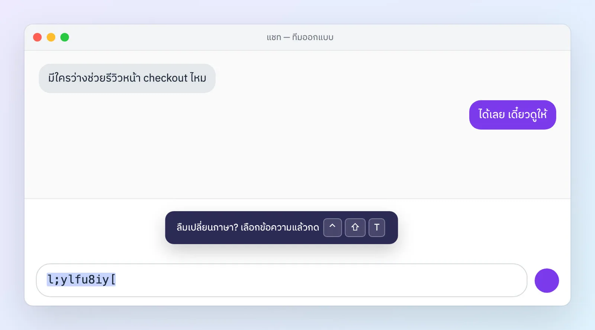
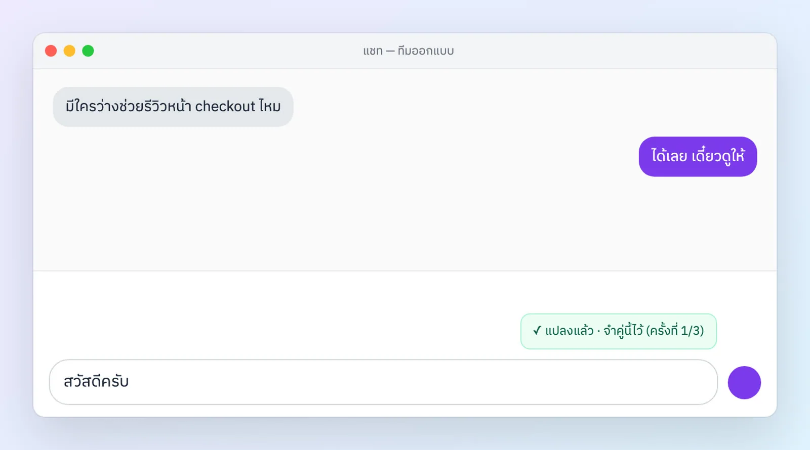
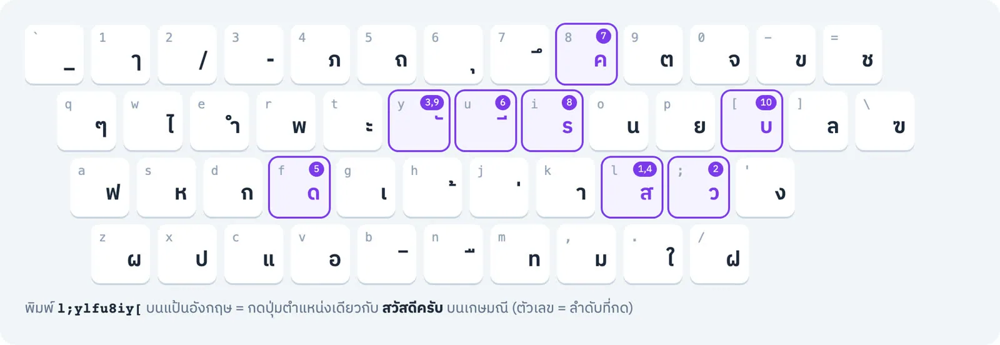
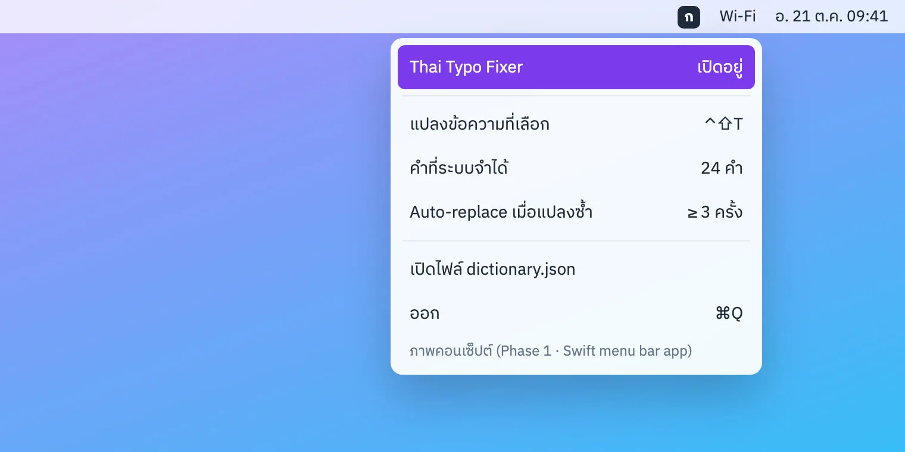
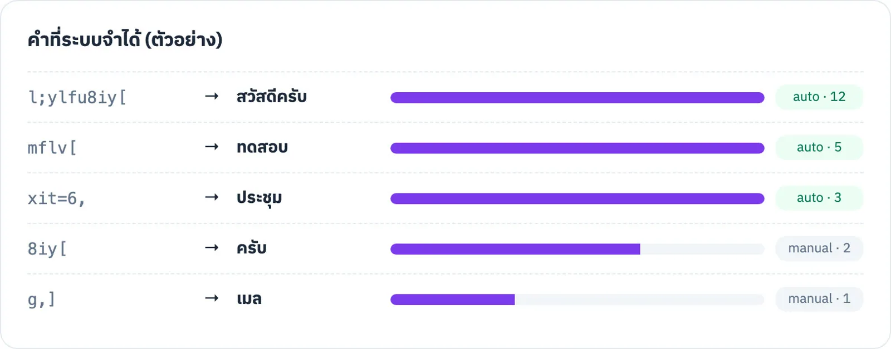
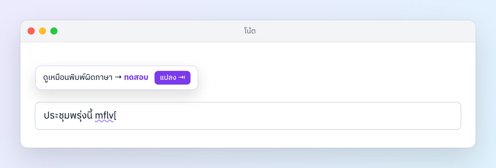

Thai Typo Fixer — forgot to switch layouts? One key fixes it
This project came from a small frustration I hit every day: forgetting to switch layouts and having to delete everything. If one key press can convert it back, life gets a lot easier.

A fix for something Thai users run into every day: forgetting to switch the input language and typing a whole sentence in the wrong layout. One shortcut converts it back to Thai.
First — see what happens
Everyone has done this...


Design Thinking Process
From a small daily annoyance to a tool idea for every Thai user
Empathize · Everyone has been there — half a sentence in before realizing the layout is wrong
Thai users type two languages on the same keyboard and switch dozens of times a day. Sometimes 10-20 characters go by before you notice you're still in English mode, and then you have to delete everything and retype it. It wastes time and it's very frustrating.
Define · "Why delete and retype when my fingers already hit the right keys?"
The characters that come out match the Kedmanee keyboard positions one for one. For example, the l key sits in the same spot as ส. So just "converting" the text back gives the intended Thai, with no retyping.
Ideate · Mapping Table + Self-Learning Dictionary
The core idea has two parts:
• Keyboard Mapping — a 1:1 lookup table from EN key → TH character (Kedmanee layout)
• Learning Engine — remembers pairs it has converted and gets better with use. Once a pair has been converted ≥3 times, it auto-replaces without the shortcut
Prototype · Lean prototype — Python first, Swift later
I started with a Python prototype because it's fast to build:
• pynput — catches the hotkey (Ctrl+Shift+T) system-wide
• pyperclip — captures text through the clipboard (select → copy → convert → paste)
• JSON file — a simple dictionary stored in ~/Library/Application Support/ThaiTypoFix/
Test · Using it myself every day — the best dogfooding
Tested by using it in real work — chat, writing code, answering email — to check whether it captures text correctly in every app, whether the dictionary learns fast enough, and whether the shortcut clashes with other apps
Keyboard mapping — the heart of the system
EN key → TH character on the Kedmanee layout (1:1 mapping)

Example: l;ylfu8iy[ → สวัสดีครับ
System Architecture
Data flow from the shortcut press to the Thai text

Shortcut Listener
Catch Ctrl+Shift+T system-wide
Text Capture
Copy the selected text through the clipboard
Mapping Engine
Check the dictionary first → if not found, use the Kedmanee mapping
Text Replace
Paste the Thai text in its place
Learning Engine
Save the EN→TH pair to dictionary.json
Self-Learning Dictionary
A system that improves with use — learning from real user behavior

How it learns
The user types mflv[ and presses the convert shortcut
The system converts it to ทดสอบ ("test") → saves the pair to the dictionary (count = 1)
Used again → count += 1, more confidence
Once count ≥ 3 → auto-replace, no shortcut needed
| Times used | Confidence | Mode |
|---|---|---|
| count = 1 | 1/3 | Manual |
| count = 2 | 2/3 | Manual |
| count = 3 | 3/3 ✓ | Auto! |
Works anywhere on macOS
Runs system-wide — press the shortcut in any app to convert
Roadmap
A 3-phase roadmap — from simple conversion to context-aware AI

Phase 1 — Core
Keyboard mapping + Shortcut trigger + Dictionary learning
Phase 2 — Smart
Auto-detection + Pattern learning + Thai spell check
Phase 3 — AI
AI typo prediction + Context-aware correction
Phase 1 — MVP: Keyboard Layout Conversion
Kedmanee mapping table + hotkey trigger + clipboard-based text capture + a JSON dictionary that learns from use
Phase 2 — Smart Detection: knows on its own when the layout is wrong
Analyzes the pattern of typed text — if it finds EN characters that aren't English words, it suggests converting automatically + Thai spell checking
Phase 3 — AI-powered: understands context, predicts ahead
Uses AI to predict that the user is typing in the wrong layout before they finish, and corrects based on sentence context
Target Metrics
Performance targets
Key Takeaways
What I learned from thinking this project through
Small problems everyone has gotten used to = good opportunities. Forgetting to switch layouts happens to Thai users every day, but nobody thinks it "can be fixed" because deleting and retyping feels normal. Looking at small problems people accept as normal is where valuable tools come from.
A 1:1 mapping made a hard-looking problem easy. At first I thought it would need complex NLP or ML, but on closer analysis the Kedmanee layout is a straight 1:1 mapping, so a lookup table converts 100% of it. The lesson: understand the problem deeply before thinking about the solution.
Self-learning doesn't have to be complicated. The learning algorithm is just "count the times". Very simple, but effective, because people's repeated typing patterns are a clear signal. No neural network needed to build something that gets better with use.
Always prototype before production. The Python prototype let me validate the idea quickly without first learning Swift and the whole Accessibility API. If the prototype works well, then it's worth investing time in a native app.